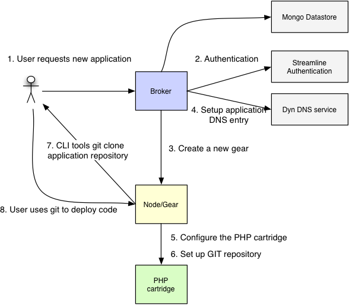
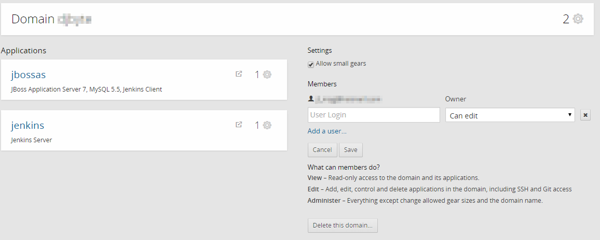

Servidores Web y PaaS
Sesión 6: Plataforma como Servicio
Índice
- Conceptos propios de OpenShift
- Creación de aplicaciones
- Modificación y despliegue
- MarketPlace
- Monitorización
» Conceptos propios de OpenShift
- Broker host: Encargado de las tareas administrativas. Framework MCollective de orquestación de procesos.
- Node hosts: Son las máquinas que ejecutarán nuestras aplicaciones. Utilizan también un cliente de MCollective para recibir las instrucciones.
Comunicación asíncrona mediante colas de mensajes.
- Applications: Fundamentalmente web/móviles, distintos lenguajes y frameworks.
- Puertos: HTTP(80), HTTPS(443), SSH(22), WebSockets (8000, 8443)
- Domains: Agrupación de aplicaciones.

https://[APPNAME]-[DOMAIN].rhcloud.com
- Gear: Recurso sobre el que se ejecutan las aplicaciones. Partición de CPU, memoria y disco de un Node Host

- SELinux para aislar procesos de usuario.
- Cgroups cuotas de CPU, memoria y disco.
- Ejemplo de capacidades:
- Cartridge:Servicios paquetizados que se utilizarán en aplicaciones.
- Standalone: Los runtime o servidores de aplicaciones, suficientes para ejecutar una aplicación: JBoss, Tomcat, Node.JS ...
- Embedded: Proporcionan capacidades extendidas (almacenamiento, planificación de tareas). Normalmente no requieren de un Gear propio
- Application Scaling: OpenShift puede monitorizar el tráfico de entrada y la carga de trabajo de los gears y crear/eliminar gears cuando sea necesario.
- Proxy Ports: Permiten exponer los puertos de los servicios que estén en ejecución (hasta 5 puertos).
Herramientas de administración
- RHC: Herramienta de administración en línea de comandos multiplataforma.
- API REST: Ofrece una funcionalidad similar a RHC pero expuesta como servicios REST.
- Consola Web: Más amigable que RHC pero algo más limitada en cuanto a funcionalidad.
- JBoss Tools: Conjunto de plugins y herramientas para Eclipse que permiten trabajar tanto con JBoss/WildFly como desplegar en cloud OpenShift. JBoss Developer Studio.
SSH
- Permite el acceso remoto a los gear desde nuestras máquina de desarrollo. La instalación de RHC crea las claves necesarias para acceder:
- Claves RSA (id_rsa, id_rsa.pub) asociadas a nuestra máquina.
- Carpeta ./ssh
- Token de autorización que nos evita tener que introducir usuario/password.
- Carpeta ./openshift.
- Se puede especificar un _scope_ para limitar sus privilegios.
- Claves RSA (id_rsa, id_rsa.pub) asociadas a nuestra máquina.
- No somos administradores de los gear
- Port-forwarding
Git
- Cada aplicación de OpenShift va ligada a un repositorio Git
- OpenShift basa su ciclo de vida en Git:
- Modificar la configuración de las aplicaciones
- Tratamiento de eventos
- Compilar y desplegar aplicaciones
- Integración continua
- La salida de Git devuelve información de todas las tareas que se realizan.
Cómo funciona OpenShift

Ejecución de una petición HTTP
- Mediante DNS se localiza el Node Host.
- Cada Node Host tiene un apache que hace de proxy y encamina la petición al Gear en función de la aplicación.
Creación de una nueva aplicación

» Creación de aplicaciones
- Listar cartridges disponibles:
rhc cartridge list

- Crear una aplicación con RHC:
rhc app-create [nombre_app] [cartridge ...]

Parámetros:
- -n, --namespace NAME
Permite especificar el dominio de la aplicación.
- -g, --gear-size SIZE
Especifica el tamaño del gear (small por defecto)
- -s, --[no-]scaling
Habilita el Application Scaling
- --from-app NAME
Permite crear una aplicación tomando otra como plantilla.
- --from-code URL
Repositorio Git del código fuente inicial.
- --region (aws-eu-west-1, aws-us-east-1)
- DIY Cartridge: Crea un gear "minimo" sobre el que podemos servicios que no encontremos entre los predefinidos.
- Catridges de terceros: Podemos crear una aplicación que utilice un cartridge diseñado por terceros, especificando la URL al repositorio git donde se encuentre:
rhc wildfly8 create https://cartreflect-claytondev.rhcloud.com/reflect?github=OpenShift-cartridges/OpenShift-wildfly-cartridge
Crear una aplicación desde la consola web.
- Basta con seleccionar el tipo de aplicación y rellenar un formulario.
- Podemos seleccionar un cartridge o un QuickStart.
- DYC y Cartridges de terceros:
Credenciales de usuario:
- Al configurar una aplicación/cartridge se suele crear un usuario administrador.
- Es importante anotar los datos del usuario administrador. No siempre es sencillo recuperarlos después.

Añadir cartridges adicionales:
- Al crear la aplicación
rhc app create [nombre_app] [cartridge1] ... [cartridgen] - A posteriori:
rhc cartridge-add [cartridge] --app [nombre_app]

Cartridges de base de datos:
- PostgreSQL, MySQL y MongoDB
- Cartridges adicionales de administración como phpMyAdmin sólo se instalarán si tenemos la base de datos
- Después de añadir cualquier cartridge de BDes recomendable reiniciar la aplicación para que aplique la nueva configuración.
Creación de Datasources en WildFly:
- Dentro del repositorio Git de la aplicación reside la configuración del servidor:
.openshift/config/standalone.xml - WildFly trae preconfigurados tres datasources de ejemplo (H2, MySQL, PostgreSQL):

Port Forwarding:
rhc port-forward [app]
» Modificación y despliegue de las aplicaciones
- Si creamos una aplicación con RHC, ya tenemos una copia del repositorio en local:
- Si no, siempre podemos descargarlo a partir de los datos de la aplicación:
git clone ssh://5408af5a4382ece19c00020f@wildfly8-jlzamora.rhcloud.com/~/git/wildfly8.git/ - O directamente con rhc:
rhc git-clone [app]
- También es posible, desde IntelliJ, con la opción Check Out from Version Control
Perfiles de Maven
openshift
wildfly8
org.apache.maven.plugins
maven-war-plugin
2.4
false
deployments
ROOT
mvn clean package -Popenshift -DskipTests
Después de modificar el código...
- Es conveniente hacer pruebas en local utilizando el perfil por defecto de maven o uno específico para trabajar en local.
- Una vez probado el código haremos un push al respositorio de OpenShift.
- Se iniciará la compilación en OpenShift y si todo va bien, se desplegará automáticamente la aplicación modificada.
Método alternativo (IntelliJ)
- Se basa en definir un OpenShift Deployment.
- IntelliJ no soporta WildFly8 en OpenShift → Hay que ayudarle.
Método alternativo (IntelliJ)
- Crear la aplicación WildFly8 desde la consola web o mediante rhc.
- Abrir el proyecto en IntelliJ. Run→Edit configurations:

- Añadir el perfil openshift al fichero pom.xml
- Ejecutar la aplicación mediante la nueva configuración de ejecución.
Consulta de logs:
rhc tail [APP]
- Vuelca todos los logs de los cartridges de la aplicación.
- -f files
Permite especificar una o varias carpetas o ficheros a mostrará - -o
Opciones, ejemplo nº de líneas: o '-n 100'
- -f files
- Borrado de logs y ficheros temporales:
rhc app tidy [APP]
Borrado de aplicaciones
- Desde la consola web, o mediante RHC:
rhc app delete [APP] - Si borramos una aplicación eliminaremos el gear y el repositorio Git asociado → Precaución
Administración de dominios

MarketPlace
- Creado en 2014 como punto de encuentro entre clientes de OpenShift y proveedores de servicios.
- Servicios clasificados por categorías y casi todos con modalidades gratuitas.
- Muy inmaduro aún: pocos servicios, nula documentación y de integración dudosa en algunos casos.
https://marketplace.openshift.com/openshift
» Monitorización
Herramientas
- A día de hoy escaso soporte a la monitorización.
- Podemos utilizar las mismas herramientas que en instalaciones propias.
- http://[app]-[domain].rhcloud.com/snoop.jsp
Datos de la JVM
port-forwarding & JMX
- Mediante JMX podemos obtener información de configuración y de ejecución de las aplicaciones (MBeans)
- Combinando ambas herramientas podemos utilizar herramientas locales de monitorización.
$ jvisualvm --cp:a /usr/local/wildfly/bin/client/jboss-cli-client.jar

port-forwarding & JMX

Cartridges de terceros
Monit

Monitorización BBDD
- phpMyAdmin para MySQL.
- RockMongo, MongoDB Monitoring Service para MongoDB.